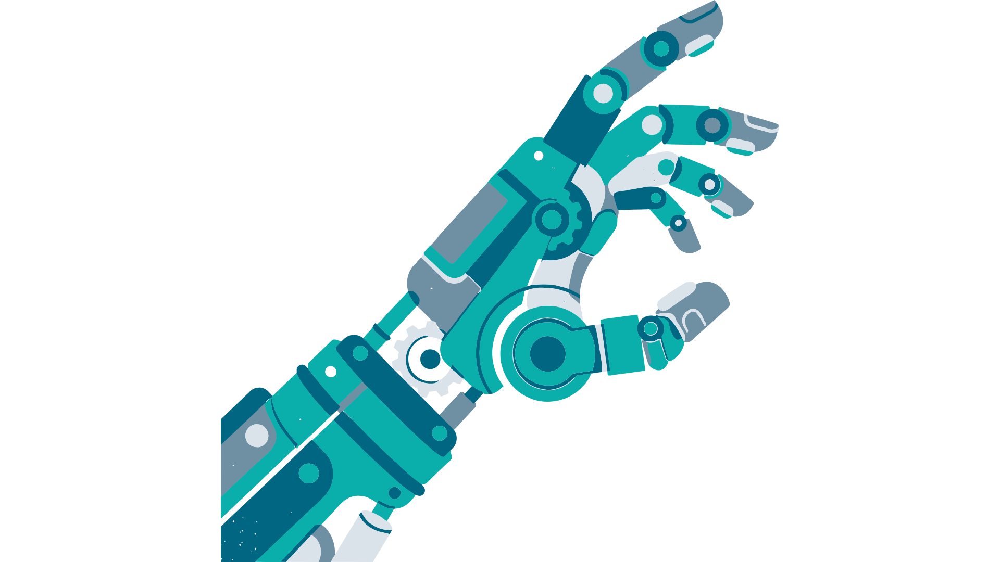
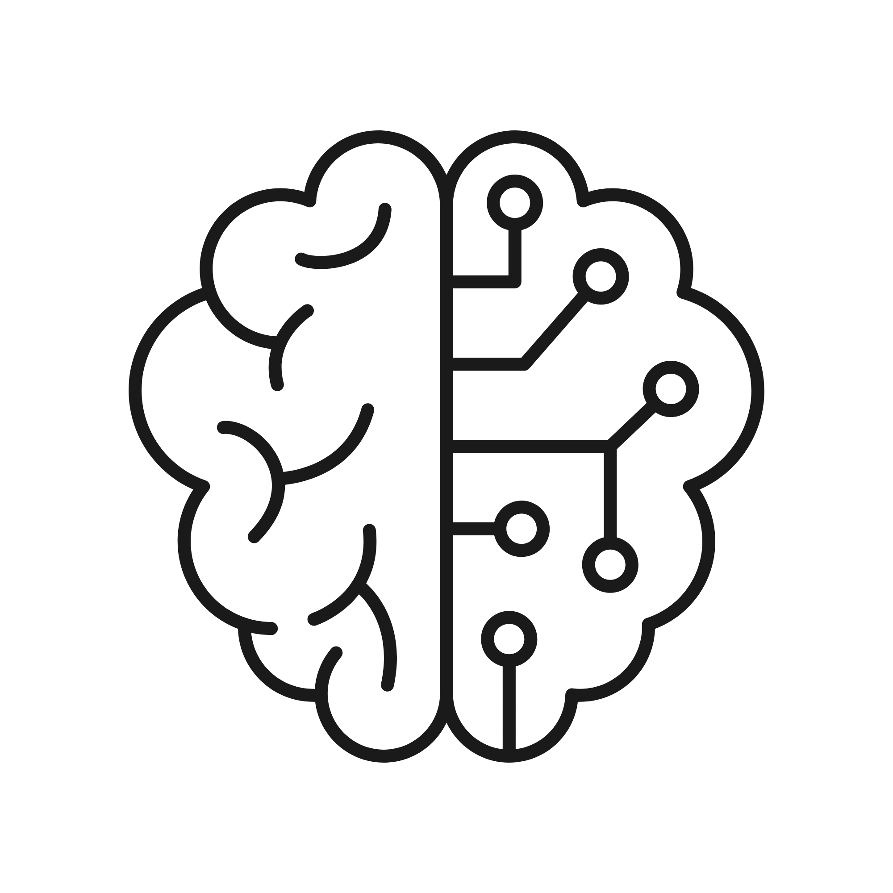
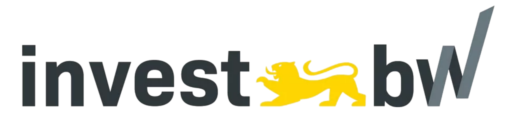

CROSS develops a software toolchain that turns natural-language descriptions into robot scenarios automatically, then visualizes and evaluates them with simulation and AI, in a way people can understand.
Collaborative robots are increasingly used in industry to support human workers, offering flexibility and efficiency. Integrating them safely while maintaining productivity is a major challenge.
Today, integration requires many manual and iterative steps and a great deal of expert knowledge and effort.
CROSS develops an innovative simulation-based software tool for the safety validation and optimisation of human-robot collaboration systems.
The toolchain generates robot scenarios automatically from natural language and evaluates them through simulation and AI.
Faster planning, easier access for non-experts and reduced dependence on a single robot manufacturer.
CROSS connects every step from an idea to an evaluated scenario in one toolchain.
Users describe the planned collaboration scenario in plain words. No programming or simulation expertise is needed.

AI extracts clear, structured requirements from the description.
The requirements are translated into a formal machine-readable scenario description.
The scenario is simulated and visualized so interactions can be evaluated before deployment.
Safety and efficiency indicators are calculated and presented in an understandable way.
Automation replaces many manual, iterative steps in planning and safety validation.

A description in natural language is enough to create and assess a scenario.

Less expert effort and shorter projects make collaborative robots affordable for more companies.
Open standards and compatibility with many simulation tools keep users independent of any single manufacturer.

Clear visualizations and scores support informed, transparent decisions.
Dr. Ali Al-Yacoub (TWT GmbH Science & Innovation) presented CROSS at the TÜV SÜD conference "Mobile Robotics: Safety-Critical Applications & Machinery" in Munich.
In his talk, "Automating risk assessment for human-robot collaboration", he demonstrated how the CROSS toolchain automates safety assessment for collaborative robot applications.
-Ali Al-Yacoub, Alina Peter, Dennis Guck, Felix Fleschhut, Michael Keckeisen, "Scenario-Based Collaborative Robot Evaluation (SCORE) Framework" , in: M. Manns (ed.), New Paradigms for Anticipated Uncertainty (CARV 2025) , Lecture Notes in Mechanical Engineering, Springer, Cham, 2026, pp. 795–803. DOI: 10.1007/978-3-032-16889-4_75 (Open Access).
Dr. Alina Peter · Dr. Ali Al-Yacoub
TWT GmbH Science & Innovation
Industriestraße 6
70565 Stuttgart/Germany
